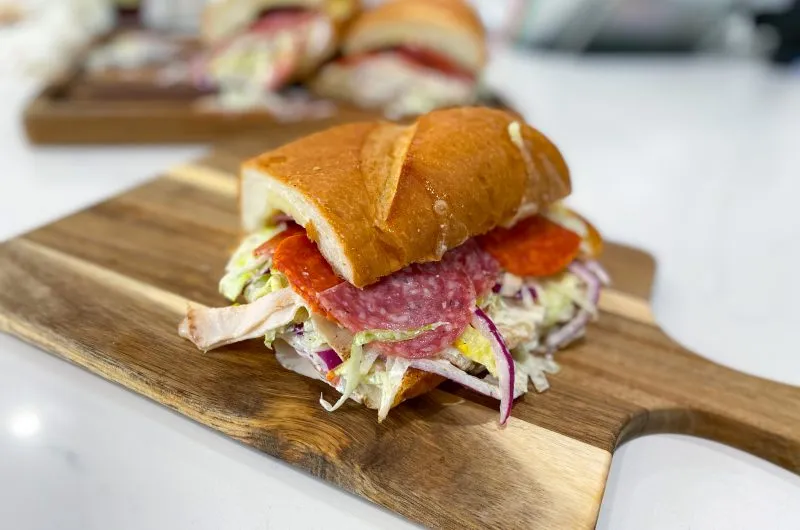

Grinder Sandwich recipe

Description
The sandwich consists of a long roll that resembles Italian bread,
but the interior is much chewier and the exterior is crustier.
The roll is sliced halfway and filled with olive oil, sliced ham,
turkey, salami, or prosciutto, provolone cheese, tomatoes, and lettuce.